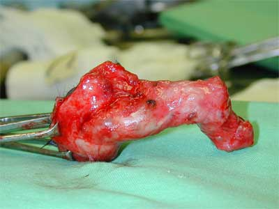

Otitis externa
Despite the huge volumes of drugs poured down animals’ ears annually, pharmacology is not always the answer. Otitis is very common - about 20% of dogs and 5% of cats - but it can be caused by many different things. First diagnose the cause - bacteria, yeasts, mites, ear conformation, or all of these! Otitis may also be the most obvious sign of generalised skin disease (55% of dogs with atopy also have otitis). Bear in mind that chronic inflammation will alter the conformation of the ear as well, which will predispose to bacterial infection. In acute otitis, remember foreign bodies, particularly grass seeds.
The goals of treatment are usually to stop the vicious circle of inflammation, exudation and infection. this will probably mean that you have to remove muck and wax, establish drainage, reduce inflammation and get rid of whatever is causing the inflammation. Contact animals should also be checked and treated if necessary.
Treatment may involve:
- flushing (under anaesthesia)
- systemic steroids?
- collars to stop scratching
- surgery
- as well as topical drugs
A large number of commercial preparations are sold for use in animals' ears. They are nearly all a mixture of different drugs to treat all the possible pathogens. Except in very severe otitis, drugs are always given topically.
Because the chances of recurrence are high, think carefully about resistance when giving antibiotics.
Otodectes cyanotis are involved in about 10% of otitis cases in dogs and 50% in cats (see parasitology note for further details). Commonly used drugs include pyrethroids and monosulphiram.
Malessezia pachydermatis (Pityrosporon canis) is a common inhabitant of dogs’ earswhich is considered an opportunistic pathogen. Commonly used drugs include clotrimazole, miconazole, nystatin and natamycin.
Staphs can be cultured from 10 - 20% of normal ears in dogs and 20 - 40% of inflamed ears. Streps can be cultured from 16% of normal ears and only 10% of inflamed ears. Proteus spp are only cultred from inflamed ears - about 11%. Pseudomonas can be cultured at very low levels from normal ears and about 20% of inflamed ears.
Staphs are usually treated with neomycin or gentamicin. These will kill most Proteus as well. Pseudomonas are more difficult. Although gentamicin or polymixin are the drugs of first choice, resistance usually develops quickly. Polymixin is inactivated by pus, so the ears must be clean before it is used. Enrofloxacin is sometimes used as a second line drug but resistance to it develops quickly as well.
Most chronically treated ears end up full of Pseudomonas resistant to most drugs. When this happens, the two approaches are to use specific antipseudomonal drugs such as amikacin, ticarcillin or cephalosporins (expensive and likely to induce resistance), or use non-antibiotic treatments (cheap and safe). Silver sulphadiazine 1% solution is effective (it is the silver which is thought to be active, not the sulphonamide). 2% acetic acid (50% vinegar) reduces the skin to pH4 which stops the bacteria growing. There are a variety of commercial preparations containing other weak acids, usually including salicylic, which softens keratin and helps to clean the ear canal. A Tris - EDTA solution is also very effective and relatively cheap, but has to be made up (see formulary).
Steroids (usually betamethasone) are often used to try to reduce inlammation and pruritus. They also reduce bacterial populations by making growing conditions less favourable. Local anaesthetics such as amethocaine are also used for pruritus.
Cleaning the muck out of the ear is very important to allow examination, allow the drugs to get to the tissues, stop inactivation of drugs, remove bacteria and bacterial breakdown products which may cause inflammation. The ears can be thoroughly cleaned under anaesthesia, followed by regular flushing by the owner.
If the ear drum is intact, solutions containing mild detergents designed for this purpose can be used. If the eardrum is ruptured or cannot be seen, use saline. If there is just an accumulation of wax, oils are sometimes used to soften it. Bactericidal flushing solutions (Tris EDTA) may be desirable.
The pinna is held up and drugs dropped into the vertical canal. The ear is massaged for about 30 seconds. It is then a good idea to stand back, as the animal’s response is usually to shake its head vigorously, when the drug plus any muck is distributed around the room.
Many drugs are toxic to the inner ear - be extremely careful if the eardrum is not intact. Drugs to avoid include: aminoglycosides, chloramphenicol, polymixin, anything containing polypropylene glycol (polyethylene glycol is OK) or a detergent and most antiseptics (especially chlorhexidine).
If chronic otitis is not treated, the ear canal lining becomes so thickened that the only likely effective treatment is surgical ablation.

Rosychuk, R.A.W., 1994, Management of otitis externa. Veterinary Clinics of North America, 24, 921
| 9 Skin index |
| |
copyright
Massey University
|